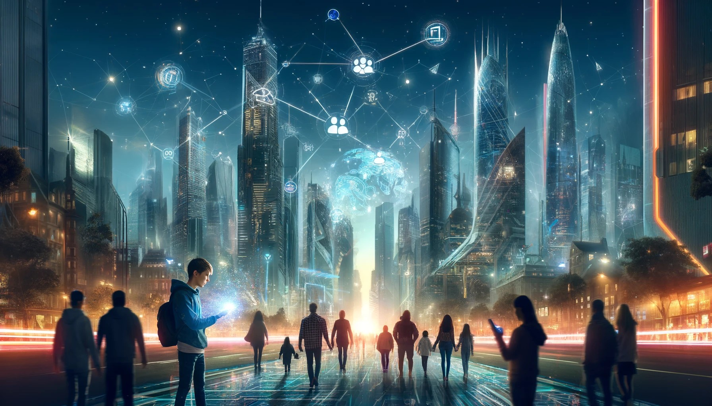

En Futura Urbis, una ciudad donde los límites entre lo digital y lo humano se difuminan, cada acción tiene múltiples matices. Aquí, la Internet y la Ciudadanía Digital no son conceptos absolutos, sino experiencias que varían en intensidad.
Los Técnicos de Conexión Digital actúan como puentes flexibles, adaptándose para Conectar Generaciones en un continuo dinámico. En este entorno donde el uso del móvil oscila entre lo productivo y lo distractor, promover
un Uso Responsable del Móvil es esencial. Te invitamos a explorar este mundo de posibilidades difusas, donde juntos navegaremos por los tonos intermedios que definen nuestra interacción con la tecnología.
